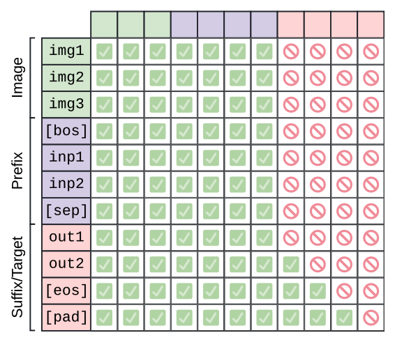
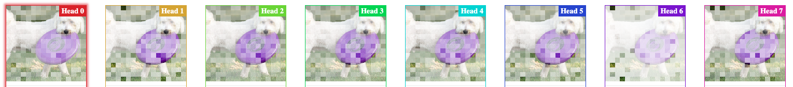

{kind=link}
Summary
This post explains how to inspect the attention patterns of a vision-language models (VLMs) using a new module I created on a fork of the circuitsviz library. To interact with an example, click here. My analysis suggests that the PaliGemma2 model, which uses a prefix-attention mask, has trained its <bos> token to be a “broker” token for visual information. Finding key tokens like this has important implications for making VLMs more compute efficient and interpretable. All the code to reproduce the analysis is on Github.
Mechanistic Interpretability
Large language models (LLMs) are notoriously difficult to interpret (black-box). One approach to shed light on LLMs is mechanistic interpretability, which aims to understand the inner workings of the model by breaking down its components. The distill.pub journal hosted early works on this topic, the team at Anthropic continued the tradition, and today researchers actively contribute to the field.
Attention Patterns
The central component of the Transformer architecture is the attention mechanism, which allows the LLM to focus on different parts of the input sequence. Most interpretability research on attention has focused on text-only models, finding e.g. “induction heads”. These are heads that learn to copy part of the input sequence into the output, and form an important mechanism for in-context learning (Olsson et al. 2022).
To find such attention patterns, it is essential to have effective visualization tools like the circuitsviz library. The examples below show two different modules in the library to visualize attention over tokens. Each token in the input sequence attends to the all other tokens (therefore the squared shape of the pattern). The attention mechanism determines the color intensity: dark fields mean high attention, white fields means low attention, and gray fields are inactive. Click on any image in this post to see a larger version.
{kind=link}
{kind=link}
Multimodal Tokens
But how are images turned into tokens? In contrast to text-only LLMs, VLMs can also process images. A VLM consists of a vision encoder, an LLM and a linear layer to combine both. The vision encoder is a vision transformer (ViT) (Dosovitskiy et al. 2021) that has been pre-trained with (image, text) pairs, like CLIP (Radford et al. 2021) or SigLIP (Zhai et al. 2023). The VLM converts the image into a sequence of image tokens in two steps:
{kind=link}
[CLS] to hold global information about the entire image, for a total of 257 tokens. All patches are then passed through the ViT to create visual embeddings. Image taken from (Dosovitskiy et al. 2021){kind=link}
In theory, we could visualize the multimodal attention patterns in with the same approach as the text-only pattern, like in Figure 1. But the input sequence is very long now (257 tokens + text tokens), and the pattern grows quadratically with the number of tokens. Also, the image tokens are concatenated by row by row, so their vertical spatial structure is lost in the naive text-only visualization.
Visualizing Multimodal Attention
This is where the new visualization shines: It overlays the attention pattern over the image, so we can appreciate the spatial structure of the attention over the image. The main visualization is split in two attention grids: The left grid shows only a single row of the image self-attention pattern, rearranged spatially on top of the image. The right grid is the classic self-attention of the text tokens.
By clicking on any token on either grid, the token is selected as the “destination” token, and the left grid switches to that row of the attention pattern. It is possible to tune the contrast of the attention with a slider, to see patterns with lower attention values. See the video below as an example.
Case Study: PaliGemma2
I use the PaliGemma2 VLM (Steiner et al. 2024) by Google as my case study, because it does not use a causal attention mask, but a prefix-attention mask. This means that the attention pattern is not triangular, and it means that early tokens can attend to the later tokens. In particular, the image tokens, which are concatenated first in the sequence, can attend to text tokens in the prompt. In contrast to other VLMs, the PaliGemma2 model does not use the [CLS] token of the ViT. However, PaliGemma2 prepends the text prompt with a <bos> (beginning of sentence) token, so the <bos> token becomes the first text token in the input sequence.
{kind=link}
 token is the “end of sentence” token. Image from (Beyer et al. 2024)">
{kind=link}
<eos> token is the “end of sentence” token. Image from (Beyer et al. 2024)PaliGemma2 uses a special syntax for the prompt: For the model to answer a question in the english (en) language, we must prefix the text question with "Answer en <question>". For example, given the image of the dog with the frisbee, the model can correctly answer the question "Answer en what is the color of the frisbee?" with "purple".
PaliGemma2’s Attention Patterns
We now drill down into PaliGemma2’s attention patterns. When looking at the attention patterns, the first thing that jumps out is that the text tokens are not attending to the image tokens very much, because the image is almost completely white (even at zero attention, the image remains visible to prevent it from dissapearing completely). This effect is consistent across layers (See Figure 2, Figure 3, Figure 4). This is surprising, because the question can only be answered by attending to the image. How does then PaliGemma2 answer the question?
{kind=link}
{kind=link}
<bos> token) is white
{kind=link}
In the middle layers (layer 15), vertical bars are visible in almost every head. This indicates that most text tokens are attending to the <bos> token, which is the first token after the image tokens. Interestingly, the <bos> does not attend back to the other text tokens. We can tell because the first row of the colored pattern is completely white (close to 0 attention) in middle and late layers.
So what is the <bos> token attending to? Mostly to image tokens. To see this, I increase the contrast of the attention patterns using the slider and compare the attentions with different destination text tokens. The <bos> token is attending uniformly to many image tokens. The images below are all from intermediate layers (layer 15).
 token attends uniformly to many image tokens">
{kind=link}
<bos> token attends uniformly to many image tokens{kind=link}
{kind=link}
This suggests a hypothesis: Namely that the visual information flows from the image tokens into the <bos> token, and then from the <bos> token to the rest of the text tokens. To quantify this, I partition the input into 3 regions: The image tokens, the <bos> token, and the rest of the text tokens. By summing up the attention of the tokens in each region, we get a measure of the attention between regions. This yields a 3x3 matrix, where each row sums up to 1.
{kind=link}
<bos> token, (an example of information flowing back from text to image). The <bos> token increasingly attends to the image tokens as depth increases. Text tokens attend as much (or more) to the <bos>token as to the image tokens, despite their ratio being 1:256.
These numbers suggest that PaliGemma2 has trained the <bos> token to be a “broker” token for visual information: The <bos> token “collects” and aggregates visual information from the image tokens into a single place, and then “serves” it back to text and image tokens. It plays a similar role as the [CLS] token in the ViT.
Do the Numbers Generalize?
To test if the hypothesis holds in general for (image, text) pairs other than the example of the dog with the frisbee, I ran the analysis on the first 1000 distinct images from the VQA dataset (train) and their corresponding questions. The dataset has multiple questions per image, but I used only the first question so as to have the most visual variation within the 1000 samples.
{kind=link}
I computed the self-attention matrix over regions for each (image, question) pair and computed the average and the standard deviation over the 1000 pairs. We observe that the standard deviations are very small, indicating that the “broker” role of the <bos> token is robust and independent of the image and question.
{kind=link}
Conclusion and Outlook
I showed how to visualize multimodal attention patterns using the new module for circuitsviz, which is useful for exploratory work in interpretability. I used PaliGemma2 as an interesting case study, because of its prefix-attention mask. After inspecting the attention patterns, I hypothesized that the <bos> token is trained to be a “broker” token for visual information, and I showed that this phenomenon is independent of the input image and question on VQA.
Yet, more analysis remains to be done: If the token is truly a “broker” token, then visual information flow should be disrupted if this token is causally intervened on (patching). It is also possible that the “broker” role is not tied to the <bos> token specifically, but to the first text token in the input (whatever it is). Finding key tokens in VLMs has been useful to improve their efficiency because the less important tokens can be pruned away and don’t have to be computed (Chen et al. 2024) (Wang et al. 2024). We saw in our example that the image tokens outnumber the text tokens (around 256 to 15). This problem is worsened by the quadratic growth of the attention pattern, so pruning image tokens greatly reduces the compute and memory footprint of the model.
Finally, by understanding the mechanisms by which VLMs process visual information, as well as their information bottlenecks, we can monitor them better and make their usage more reliable and safe. We can also control them more easily, for example by intervening on the activations of key tokens when necessary, ultimately improving their safety once deployed.
Acknowledgement
This is the final project for the course “Artificial Intelligence Safety Fundamentals” (AISF) by BlueDot Impact. The author is funded by the Bavarian Research Institute for Digital Transformation (bidt) and the Ludwig Maximilian University of Munich.
References
Citation
@online{ruiz2025,
author = {Ruiz, Tomas},
title = {Drilling {Down} into {Multimodal} {Attention}},
date = {2025-02-01},
url = {https://tomasruizt.github.io/posts/multimodal-attn/},
langid = {en}
}